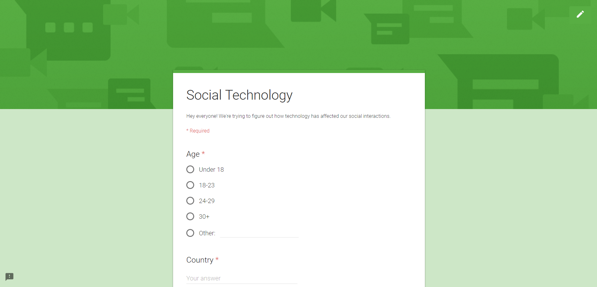

Role
With a team of 5, I worked on the ideation, research, and design processes. The effects of social media on human interaction is something we cared about.
Context
Emerging technology and increased usage of social media has generated interest into the effects that this new form of communication has on society. Global sites such as Facebook have as many as 2 billion users every month. Hangouts is an engaging game that encourages modern social media users to consider the impacts that social media platforms have. We wanted to promote discussion and have players walk away with a better understanding on the advantages and disadvantages of social media interactions.
Research
We wanted to focus on digital natives and determine the best way to reach our users. Our initial research revealed a growing number of virtual relations rather than personal ones. We conducted a survey that showed a clear majority used some form of social media to do most of their communication. It was resolved that the best way to reach our users was through the use of social media platforms themselves.
Design
Conception of the game was carried out through multiple iterations and prototypes. We started with a design sprint that got initial ideas onto the page.
An initial concept involved the use of various social media platforms for users to complete challenges through. However, after initial user testing, it was found that the focus was taken away from communication and instead put towards the apps themselves. We revised our idea and limited the number of platforms to strengthen the basic game concept and flow.
Our design went through multiple iterations of testing that each had new findings and takeaways. The final high-fidelity prototype was created online for users to access on their own smartphones and an interactive game piece to ensure players were engaged.
Big Picture
Hangouts demonstrates the impacts of technology and social media by getting users to experience the different types of interactions they have on a magnified level. The game also provides a way for infrequent social media users to experience and understand the situations that require having access to certain platforms. By guiding the players to participate in various scenarios, the game shows individuals the advantages and disadvantages of varying platforms.